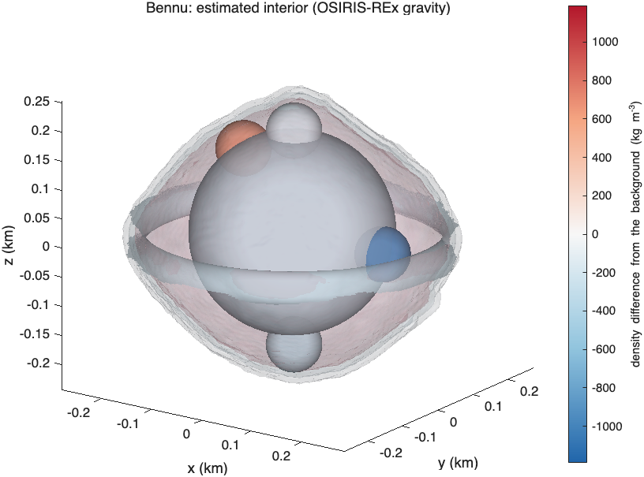

Bennu#
Last edited October 19, 2026
projects/bennu/ estimates the interior of the asteroid Bennu from the OSIRIS-REx gravity field (JPL, 2019; degree 10,
= 0.290 km) following Cavale et al., "Constraints on the Internal Density Distribution of Bennu Using
OSIRIS-REx Mission Data" (Icarus), and reproduces that paper's inversion.
Files#
| File | Purpose |
|---|---|
bennu_body.m |
Shape model bennu_higher_qual.obj (196,608 facets, body-fixed frame with origin at the center of mass), bulk density 1190 kg/m³, = 0.290 km. |
bennu_measurements.m |
The field as a measurement set, with the paper's weighting (C10 = C11 = S11 = 0, , C21, S21, C22, S22, , with equal weights) or with all coefficients of degrees 2–4 and the full JPL covariance. Reads the file with sbtk.io.read_jpl_gravity. |
bennu_paper_components.m |
The paper's nominal model: prescribed surface (0–10 m, −297.5 kg/m³) and subsurface (10–20 m, +1190 kg/m³) layers, a core of radius 170 m with estimated center, an equatorial torus and four boulders. Positions are from the origin of the shape model, as in the paper; that origin is Bennu's center of mass from the OSIRIS-REx tracking data, 1.4 m from the center of figure (Where to place components). |
invert_bennu_paper.m |
Reproduces the paper's inversion with the background held at the bulk density and compares the result with the paper's values (tests/reference/bennu_paper_nominal.json). |
invert_bennu_boulder_positions.m |
The same with the centers of the two boulders that target C21/S21 and C22/S22 also estimated, with an a priori 1σ of 10 m per coordinate. |
check_bennu_full_field.m |
Compares the reproduced interior's coefficients of degrees 2–4 with the full field and covariance. |
bennu_compare_with_paper.m |
Prints a fit next to the paper's values. |
Reproduction of the paper#
Relative densities from tools/make_readme_examples.m, which runs the paper configuration:
| Relative density (kg/m³) | Paper | SBTK |
|---|---|---|
| core | −241.9 | −242.1 |
| torus | −239.4 | −234.6 |
| boulder C21 | +664.5 | +660.8 |
| boulder C22 | −1049.3 | −1037.3 |
| boulder north | −148.0 | −146.4 |
| boulder south | −251.5 | −250.9 |
| core center (m) | (1.86, −7.89, 12.59) | (2.06, −7.91, 12.56) |
The paper's code counted a surface facet as part of the torus only when all three of its vertices were inside the tube;
SBTK integrates the exact intersection, whose volume is 2.4% larger, which accounts for most of the torus difference.
tests/integration/test_bennu_paper.m checks the reproduction: the core relative density within 1 kg/m³, the boulders
within 2%, the torus mass contrast within 1%, the core center within 0.5 m, and the coefficients the paper did not fit
(C31 … S44) within 0.15 of the JPL 1σ (Validation).

sbtk.plot.interior3d).